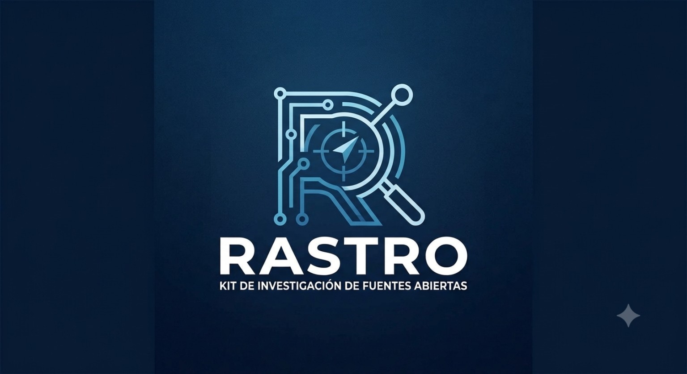

RASTRO-CONTACT
Inteligencia de contactos · análisis actual e histórico
Nueva investigación
Guardar caso
Exportar JSON
CSV
OBJETIVO INVESTIGADO
RASTRO-CONTACT
—
Analizar pestaña actual
Analizar histórico
Detener
Preparando…
Emails
0
Teléfonos
0
Redes
0
Históricos
0
Hallazgos prioritarios
CORRELACIÓN
No hay resultados todavía.
Páginas de interés
Analizar seleccionadas
Sin páginas detectadas.
Contactos actuales
DOM ACTUAL
Contactos históricos
WAYBACK
Cronología
FIRST / LAST SEEN
Fuentes y metadatos